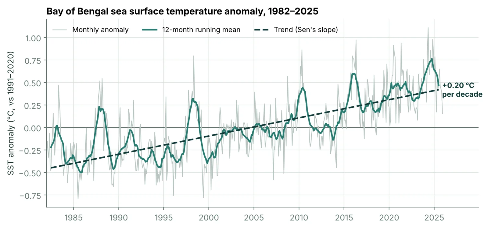
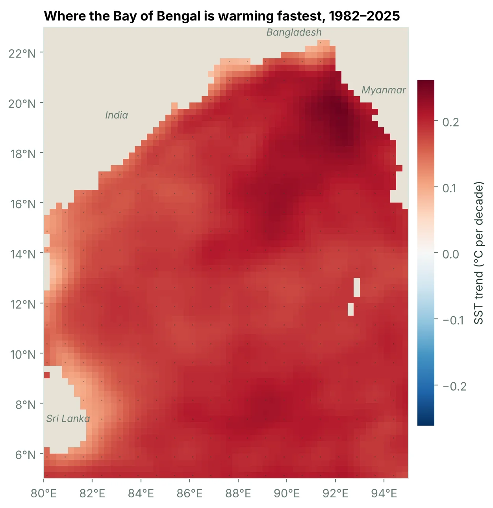
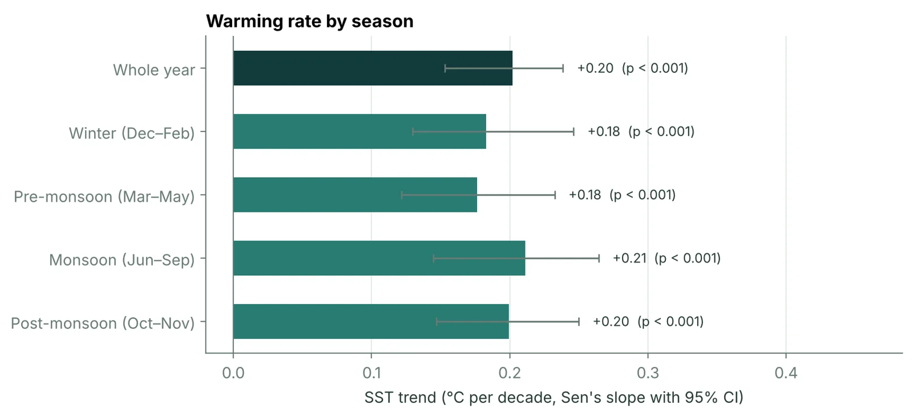
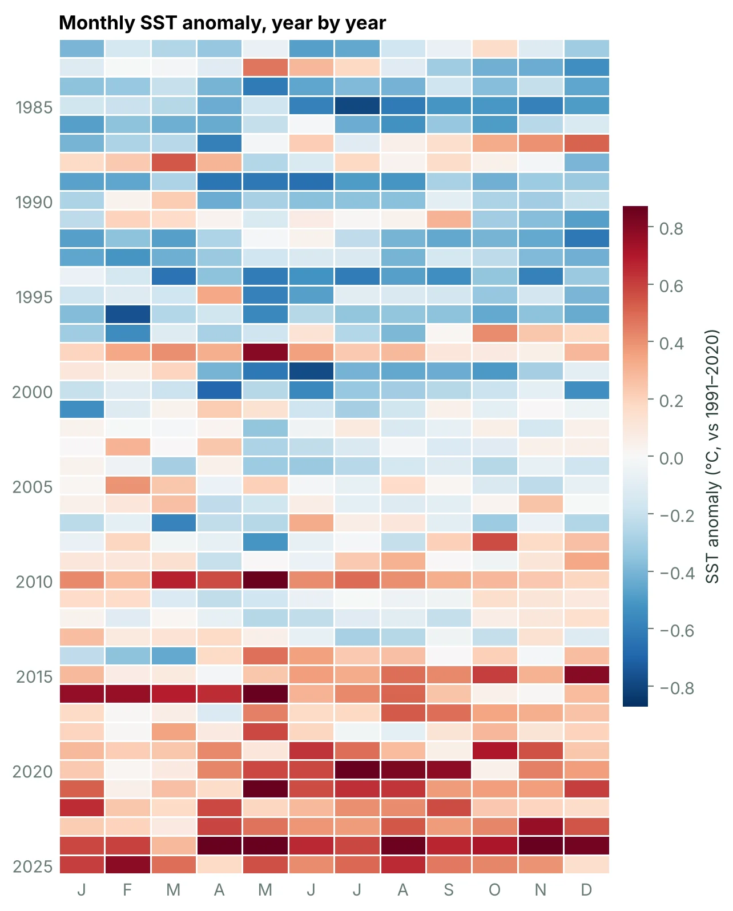
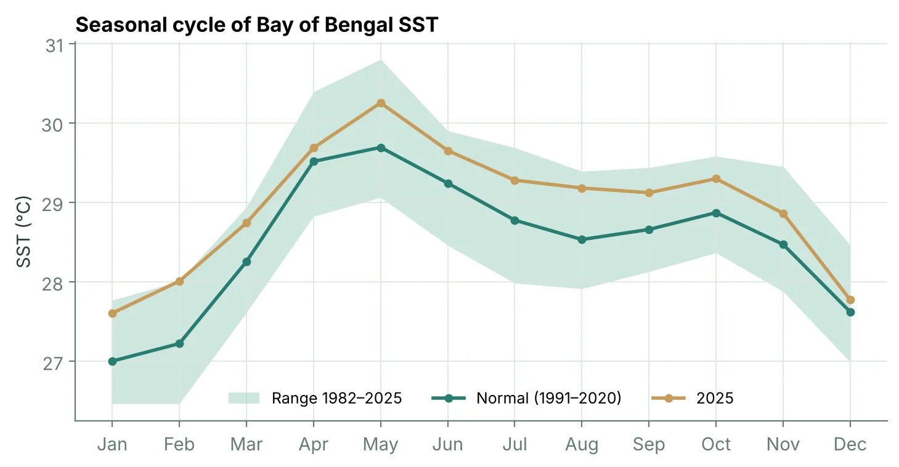
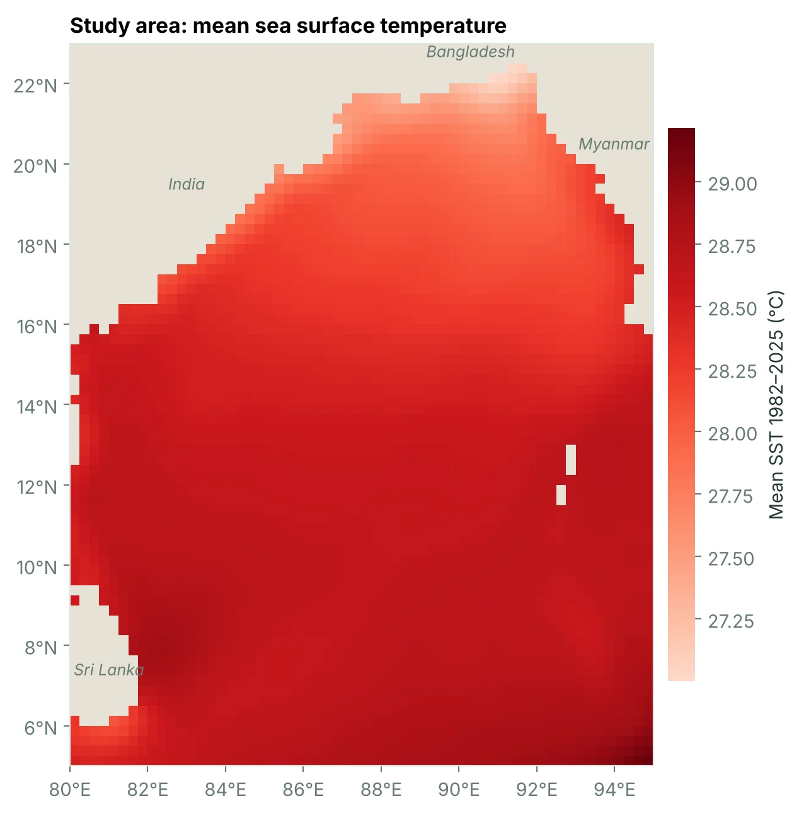

How fast is the Bay of Bengal warming?
I analysed 44 years of satellite-based sea surface temperature (1982–2025) to measure how fast the Bay of Bengal is warming, which season warms fastest, and where in the Bay the change is strongest.

Key findings
- Between 1982 and 2025, the Bay of Bengal warmed at about +0.20 °C per decade (95% CI +0.15 to +0.24), a statistically significant trend (Mann–Kendall p < 0.001).
- That adds up to roughly +0.87 °C over the 44-year record.
- The warmest year was 2024 (29.22 °C basin average). All five of the warmest years fall in the last decade (2016–2025).
- All four seasons warmed at similar rates, from +0.18 to +0.21 °C/decade. The differences between seasons are smaller than their uncertainty, so no season stands out.
- Every ocean grid cell in the study area shows statistically significant warming. The average trend is +0.20 °C/decade north of 15°N and +0.19 °C/decade south of it.
Where is it warming fastest?
I repeated the trend calculation for every 0.25° grid cell in the study box. The map shows the warming rate in each cell; dots mark cells where the trend is statistically significant.

Which season warms fastest?
The Bay of Bengal's year is shaped by the monsoon, so I split it into four seasons and fitted a separate trend to each one.

| Season | Trend (°C/decade) | 95% CI | Mann–Kendall |
|---|---|---|---|
| Winter (Dec–Feb) | +0.18 | +0.13 to +0.25 | p < 0.001 |
| Pre-monsoon (Mar–May) | +0.18 | +0.12 to +0.23 | p < 0.001 |
| Monsoon (Jun–Sep) | +0.21 | +0.14 to +0.26 | p < 0.001 |
| Post-monsoon (Oct–Nov) | +0.20 | +0.15 to +0.25 | p < 0.001 |
Every month since 1982
Each row is a year and each column a month. Blue months were cooler than the 1991–2020 normal and red months warmer.


Data and methods

- Data: NOAA OI SST V2 High Resolution, monthly means on a 0.25° grid. It blends satellite (AVHRR) observations with ship and buoy measurements. Accessed 2026-11-10.
- Study area: 5–23°N, 80–95°E. Land cells have no SST value and drop out.
- Basin average: each grid cell is weighted by the cosine of its latitude, because cells shrink towards the poles.
- Anomalies: departures from the 1991–2020 monthly climatology (the current WMO normal).
- Trend: Sen's slope (Theil–Sen estimator) on annual means, tested with the Mann–Kendall test. Ordinary least squares gives a similar rate of +0.19 °C per decade.
- Seasons: winter (Dec–Feb, with December counted towards the following year), pre-monsoon (Mar–May), monsoon (Jun–Sep) and post-monsoon (Oct–Nov).
- Grid-cell trends: least-squares trend of annual means in each cell, with a t-test on the slope.
Limitations
- About four decades of data is enough to detect a trend, but El Niño and the Indian Ocean Dipole can make any one decade look faster or slower than the long-term rate.
- Annual means reduce, but do not remove, year-to-year persistence, so the p-values are somewhat optimistic.
- This is surface temperature only. It says nothing about warming at depth, where the Bay's strong salinity stratification matters.
- OISST is a smoothed, gridded product. Cells near river mouths and the coast are the least reliable.
What I would do next
- Count marine heatwaves from the daily version of the dataset, using the Hobday et al. (2016) definition.
- Regress out the ENSO and IOD indices to see how much of the trend remains.
- Compare with an independent record such as ERSST v5 or Argo float temperatures.
Data credit and references
- NOAA OI SST V2 High Resolution Dataset data provided by the NOAA PSL, Boulder, Colorado, USA, from their website at psl.noaa.gov.
- Huang, B., Liu, C., Banzon, V., et al. (2021). Improvements of the Daily Optimum Interpolation Sea Surface Temperature (DOISST) Version 2.1. Journal of Climate, 34, 2923–2939.
- Sen, P. K. (1968). Estimates of the regression coefficient based on Kendall's tau. Journal of the American Statistical Association, 63, 1379–1389.
- Kumar, S., Chakraborty, A., Chandrakar, R., et al. (2023). Analysis of marine heatwaves over the Bay of Bengal during 1982–2021. Scientific Reports, 13, 14235.
- Hobday, A. J., et al. (2016). A hierarchical approach to defining marine heatwaves. Progress in Oceanography, 141, 227–238.